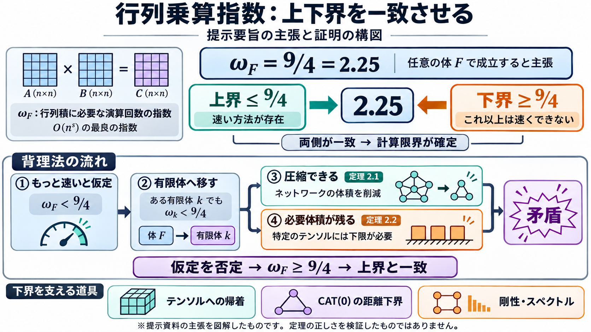

OpenAI Matrix Multiplication: The Proof Behind the 2 25 Leap
OpenAI Matrix Multiplication: the proof behind the 2.25 leap. In this 19-minute breakdown, we explain OpenAI's October 2…

OpenAI Matrix Multiplication: the proof behind the 2.25 leap. In this 19-minute breakdown, we explain OpenAI's October 2…
fields, obtaining lower bounds for the classical and asymmetric dual exponents. Amanov, van den Berg, and Zuiddam \ gave…
In both cases the exponent matches the lower bound given by the number of outputs. The proofs apply the same ideas as in…
### An Upper Bound of 9/4 for the Matrix Multiplication Exponent We prove that the exponent of matrix multiplication ov…
OpenAI (2026a) announced the bound complex numbers, with an argument attributed to an internal OpenAI model. VibeMathed …